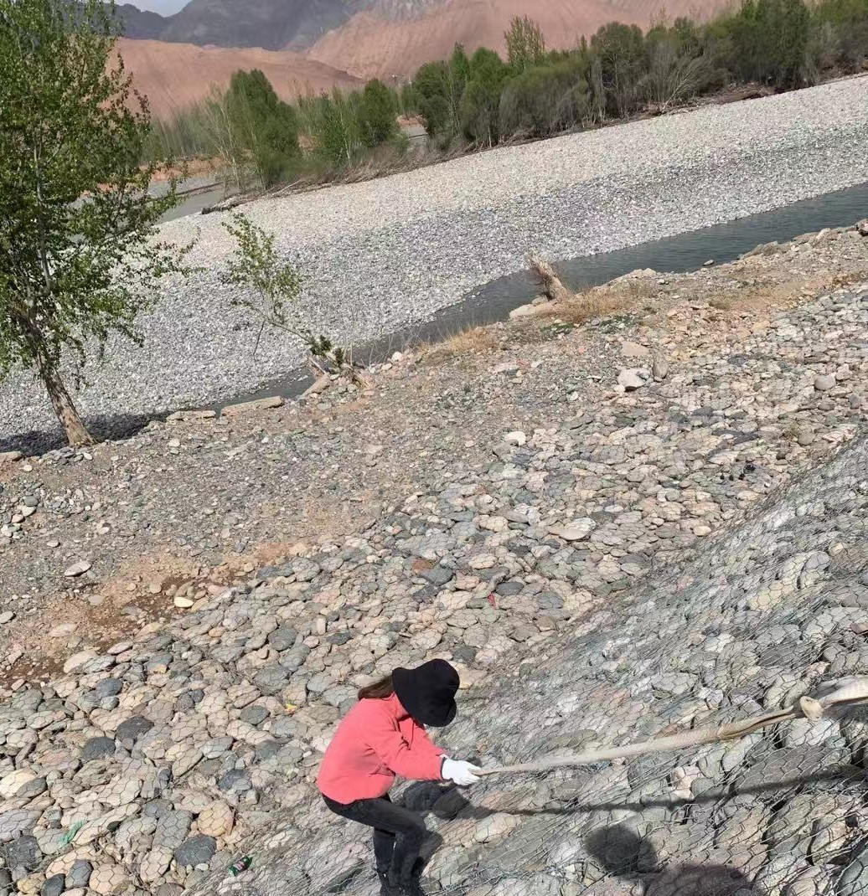
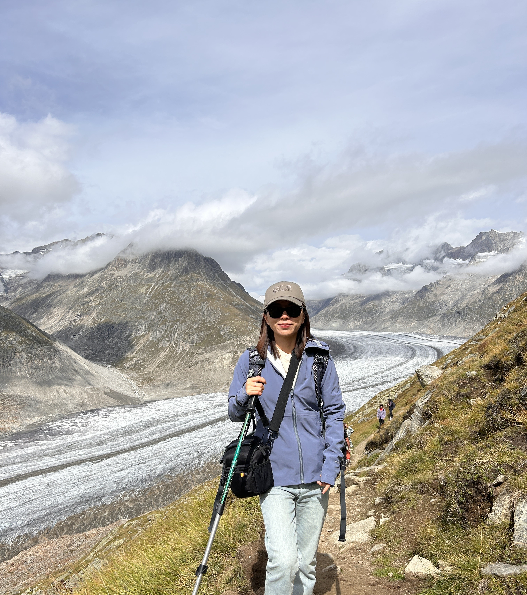
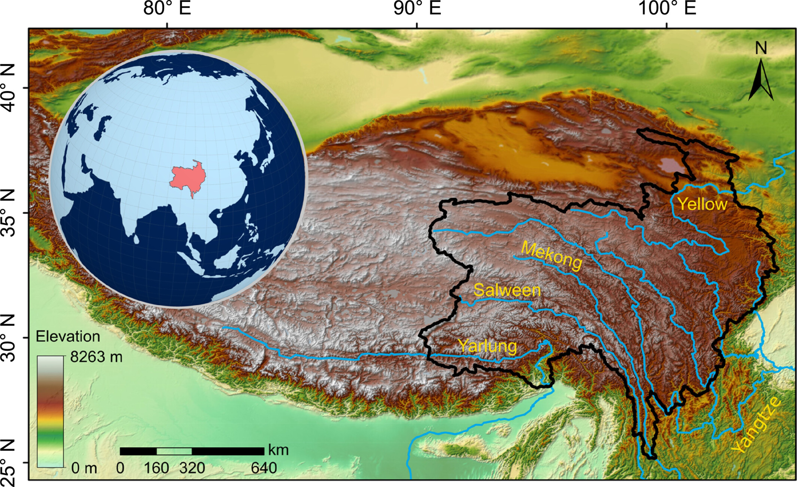
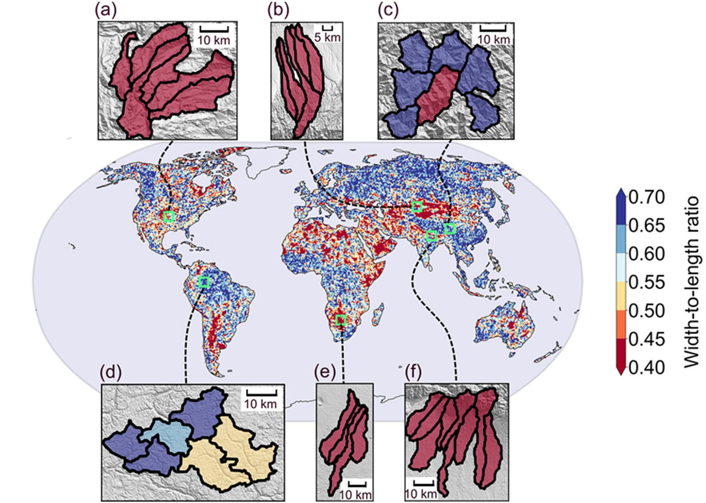
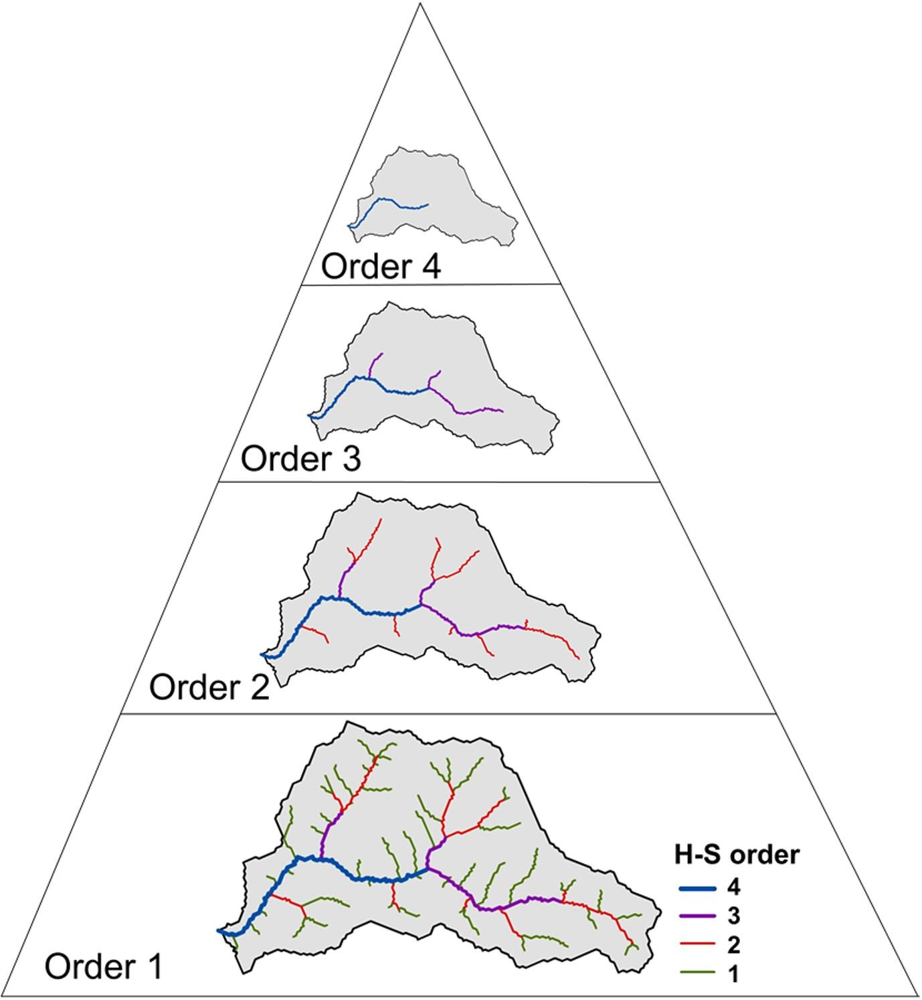

Hi, I'm Minhui, a postdoctoral associate at the Yale School of the Environment. I study how rivers interact with landscapes and climate, focusing on stream network geometry, topology, and hydrological connectivity. My research combines extensive GIS analyses, data-driven methods, physics-based theory and large-sample datasets to quantify the interrelationships between climate, landscape, river network structures and catchment responses. I work across regional, continental, and global scales, aiming to reveal broad spatial patterns and the underlying processes that shape them.



Have fun exploring NATURE!
CV (Last updated: August, 2025)Education:
Sep. 2018 - Jun. 2024
PhD, Department of Hydraulic Engineering, Tsinghua University, China
Advisors: Xudong Fu, Baosheng Wu, James Kirchner
Sep. 2014 - Jun. 2018
BSc, Dayu College, Hohai University, China
Dec. 2021 - Nov. 2023
Visiting PhD student, Department of Environmental Systems Sciences, ETH Zurich, Switzerland
Advisors: James Kirchner, Hansjörg Seybold
Working Experiences:
Jan. 2025 - present
Postdoc associate, School of the Environment, Yale University, United States
Advisor: Peter Raymond
Aug. 2024 - Dec. 2024
Postdoc, Department of Environmental Systems Sciences, ETH Zurich, Switzerland
Advisor: James Kirchner
Dec. 2023 - Jul. 2024
Scientific assistant, Department of Environmental Systems Sciences, ETH Zurich, Switzerland
Advisors: James Kirchner
My research broadly focuses on geomorphology, hydrology, and biogeochemistry, with three main areas of interest:
- Hydrological controls on stream network expansion and contraction, and their implications for riverine carbon dynamics.
- Continental- to global-scale morphological analysis of stream networks and watersheds.
- Dynamic connectivity between landscapes and stream networks, and its influence on hydrologic responses across different climates.
STREAM NETWORK BRANCHING GEOMETRY

- Branching angles of major stream networks on the eastern Tibetan Plateau vary systematically with climatic aridity and channel slopes.
- Climatic controls dominate over tectonic drivers in shaping the branching angles in the flat interior of the eastern Tibetan Plateau.
- Tectonic controls dominate over climate in shaping the branching angles in the steep margin of the eastern Tibetan Plateau.
Related publication:
Li, M., Seybold, H., Wu, B., Chen, Y., & Kirchner, J.W. (2023). Interaction between tectonics and climate encoded in the planform geometry of stream networks on the eastern Tibetan Plateau. Geophysical Research Letters, 50(14), e2023GL104121. DOI
Li, M., Seybold, H., Wu, B., Chen, Y., & Kirchner, J.W. (2023). Interaction between tectonics and climate encoded in the planform geometry of stream networks on the eastern Tibetan Plateau. Geophysical Research Letters, 50(14), e2023GL104121. DOI
DRAINAGE BASIN SHAPES

- Globally, basins with greater topographic roughness tend to be wider, and those with steeper whole-basin slopes tend to be narrower.
- In arid regions (aridity index <0.65), basins tend to widen as climate becomes more humid.
- Basin shape is strongly correlated with topographic roughness, whole-basin slope and climatic aridity on a global scale.
Related publication:
Li, M., Seybold, H., Wu, B., Chen, Y., & Kirchner, J.W. (2024). Global analysis of topographic and climatic controls on drainage basin shapes. Geophysical Research Letters, 51(8), e2023GL105804. DOI
Li, M., Seybold, H., Wu, B., Chen, Y., & Kirchner, J.W. (2024). Global analysis of topographic and climatic controls on drainage basin shapes. Geophysical Research Letters, 51(8), e2023GL105804. DOI
STREAM NETWORK CLASSIFICATION

- The development of river networks is closely related to landscape evolution and terrain characteristics.
- A classification method based on the hierarchical structure of river networks improves accuracy by capturing drainage texture, flow direction, and aspect ratios.
- The proposed method outperforms previous methods, achieving cross-validation accuracies up to 82%, demonstrating the importance of hierarchical structures in river network classification.
Related publication:
Li, M., Wu, B., Chen, Y., & Li, D. (2022). Quantification of river network types based on hierarchical structures. CATENA, 211, 105986. DOI
Li, M., Wu, B., Chen, Y., & Li, D. (2022). Quantification of river network types based on hierarchical structures. CATENA, 211, 105986. DOI
STREAM NETWORK TOPOLOGY
UPDATING SOONCLIMATE AND LANDSCAPE CONTROLS ON RAINFALL-RUNOFF RESPONSE
UPDATING SOONHILLSLOPE-CHANNEL NETWROK CONNECTIVETY
UPDATING SOONPapers in progress:
- Li, M., Seybold, H., Fu, X., Wu, B., Raymond, P., & Kirchner, J.W. (2025). Climatic controls on stream network topology. (Under Review)
- Li, M., Seybold, H., Beria, H., Floriancic, M., Fu, X., Raymond, P., & Kirchner, J.W. (2025). Climatic and topographic controls on runoff response. (Submitted)
Peer-reviewed:
- Li, M., Seybold, H., Wu, B., Chen, Y., Fu, X., & Kirchner, J.W. (2024). Global analysis of topographic and climatic controls on drainage basin shapes. Geophysical Research Letters, 51(8), e2023GL105804. DOI
- Li, M., Seybold, H., Wu, B., Chen, Y., & Kirchner, J.W. (2023). Interaction between tectonics and climate encoded in the planform geometry of stream networks on the eastern Tibetan Plateau. Geophysical Research Letters, 50(14), e2023GL104121. DOI
- Li, M., Wu, B., Chen, Y., & Li, D. (2022). Quantification of river network types based on hierarchical structures. CATENA, 211, 105986. DOI
- Chen, Y., Wu, B., Xiong, Z., Zan, J., Zhang, B., Zhang, R., Xue, Y., Li, M., & Li, B. (2021). Evolution of eastern Tibetan river systems is driven by the indentation of India. Communications Earth & Environment, 2(1), 256. DOI
- Zhang, B., Wu, B., Zhang, R., Ren, S., & Li, M.. (2021). 3D numerical modelling of asynchronous propagation characteristics of flood and sediment peaks in Three Gorges Reservoir. Journal of Hydrology, 593, 125896. DOI
- Qin, C., Wu, B., Wang, Y., Fu, X., Xue, Y., Li, D., Li, M., & Zhang, Y. (2020). Dynamic variability of at-a-station hydraulic-geometry for mountain rivers in the southeast Qinghai-Tibet Plateau: The cases of Yalong River and upper Jinsha River. Catena, 194, 104723. DOI